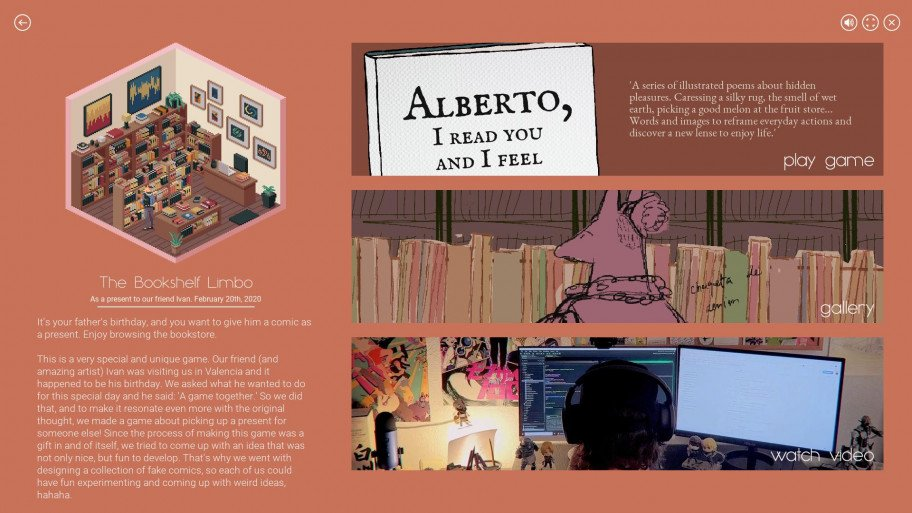
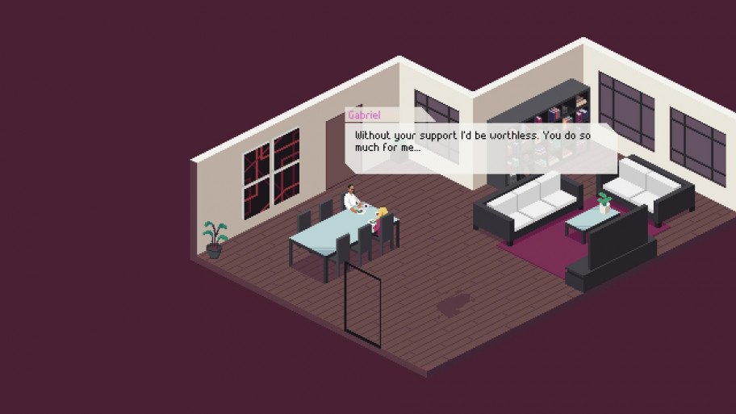
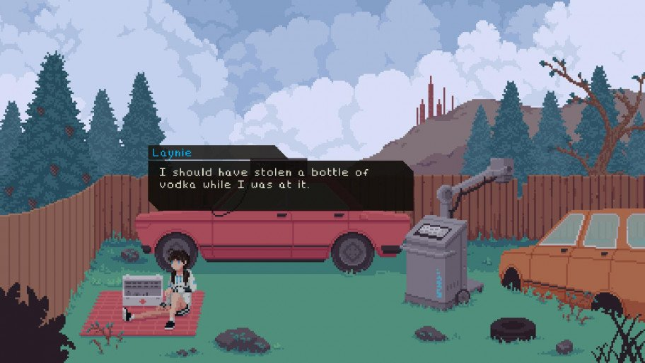

Платформа: PC
Жанр: rpg
Дата выхода: 18 мая 2021 г.
Разработчик: Deconstructeam
Издатель: Devolver Digital
Испанский коллектив Deconstructeam выпустил лишь две коммерческие игры,
зато какие — даже спустя несколько лет с теплотой вспоминаешь и Gods Will Be Watching, и The Red Strings Club.
А в перерывах между этими релизами разработчики посещали «геймджемы» — мероприятия,
на которых за пару дней нужно создать игру на заданную тему. Именно из таких коротеньких развлечений (и не только)
состоит сборник Essays on Empathy.
Игры Deconstructeam славятся не только интересными историями с захватывающими диалогами, но и невероятной атмосферой. В них всё продумано до мелочей: какая музыка и когда включится, насколько долгую паузу сделает персонаж перед следующей репликой, как геймплейные механики переплетаются с повествованием. Всему этому, конечно, уделяют внимание и другие разработчики, но испанская команда так глубоко погружает в свои миры, как неспособны это сделать многие.

Игры в Essays on Empathy можно описать так же — какую-то сделали за два дня, какая-то была готова через три,
но за это время авторы успели очень многое и остались верны своему стилю.
Самое яркое впечатление оставила Behind Every Great One, депрессивная история о домохозяйке,
муж которой — сильно увлечённый работой художник. Весь геймплей — ходьба по квартире и взаимодействие с предметами:
гладишь вещи, моешь посуду, поливаешь цветы. Но всё успеть невозможно, и очень быстро день заканчивается,
после чего выслушиваешь упрёки мужа по поводу невыполненных «обязанностей». Приезжают гости, которые не следят за языком,
у супруга возникают проблемы, да ещё и каждую ночь он приставать начинает.

Разработчики умело передают внутреннее состояние героини — то камеру слегка наклонят,
то экран покроют фильтром. Хотя превыше всего здесь, конечно, диалоги.
Да и когда узнаёшь, ради чего муж тратил столько времени, малейшая симпатия к нему пропадает.
Заканчивается игра на клиффхэнгере, и, даже если не знать, что это проект для «геймджема»,
открытый финал кажется правильным выбором.
Также на интересном моменте обрывается 11.45: A Vivid Life — самая странная и экспериментальная игра в сборнике,
как описывают её авторы. Это история о девушке, которая уверена, что её скелет принадлежит кому-то другому.
Она крадёт рентгеновский аппарат, берёт с собой аптечку и уезжает в глушь.
Мы сканируем её внутренности и находим в теле странные объекты,
после чего хирургическим методом или как-то иначе вытаскиваем их и изучаем.

Прелесть этой игры в том, что природу объектов определяете вы сами — вам лишь дают несколько вариантов. Хотите связать их с семейными ссорами и драками — пусть будет так, а если хотите отыгрывать роль сумасшедшей, то пусть во всём будут виноваты русские спецслужбы. Изучив каждую странную деталь в своём организме, девушка складывает у себя в голове пазл и проговаривает выводы на диктофон. Короткое, но действительно необычное развлечение, которое в формате двухчасовой игры вряд ли бы сработало.